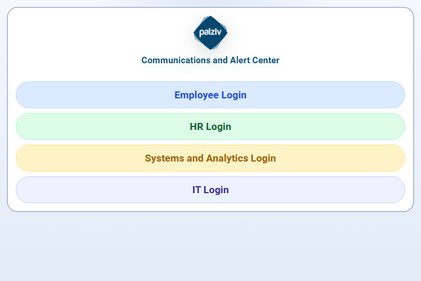
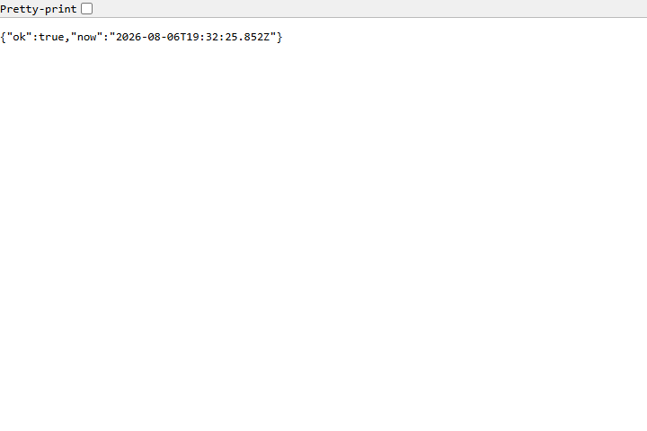

This quick PDF shows exactly what to do when the app looks black, blank, or partly loaded.
Document status: Verified August 6, 2026.
Use this guide when the portal is black, blank, partly loaded, or missing its normal buttons.
Open:
https://itotexpress.com/palzivalerts
If the normal launcher appears, choose the correct role and sign in again.
If you see New portal update available, select Reload now.
Open:
https://itotexpress.com/api/health
This is the public server-alive check. It should show a short response containing:
"ok": true
"ok": true, the server is responding and the problem may be a stale app tab, browser cache, sign-in state, or client-side error.Take one screenshot of the problem page or public health page. Send it with:
"ok": trueDo not send a screenshot containing a typed password or authenticator code.
The detailed diagnostics route is:
https://itotexpress.com/api/health/diagnostics
It requires an authorized Systems or IT session. An employee or signed-out browser may receive Unauthorized; that is expected and does not mean the server is down.
Systems or IT can use the protected result to review recent client errors such as blank-screen, runtime-error, or unhandled-rejection before escalating.
Reload now: stale cached app assets were likely replaced.Unauthorized: sign in as Systems or IT before using that route.The public health result is safe to use for the first check. Detailed diagnostics are restricted because they contain operational information.
Open the normal app page first and confirm the usual launcher buttons are visible.

Open the public health address and look for "ok": true. The written guide explains what to report next.
